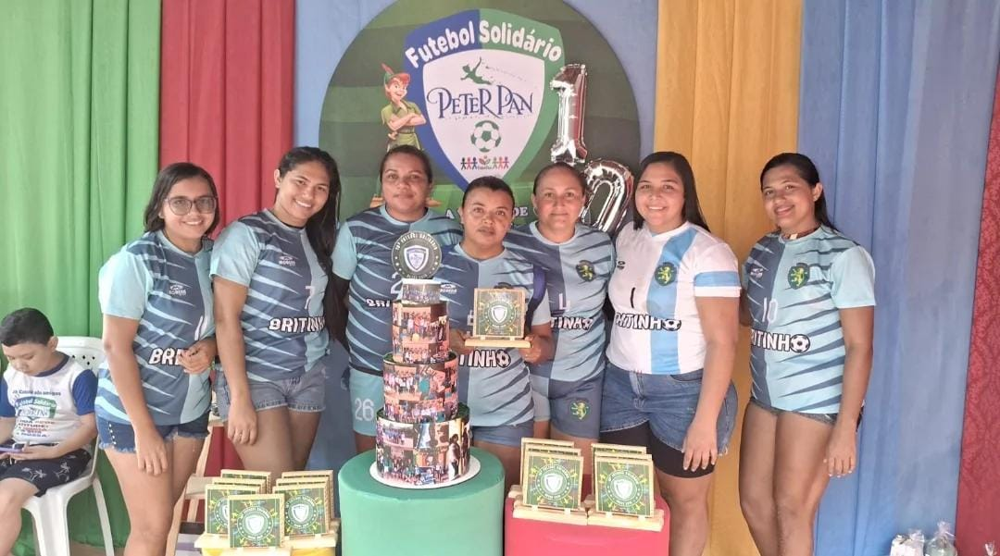

O Circuito Peter Pan é uma oportunidade de unir o amor pela corrida e a solidariedade à causa do câncer infantil. É uma nova proposta para a prática do esporte em Fortaleza, pois o propósito humanitário diferencia o nosso evento, já que contamos com a energia dos inscritos que verdadeiramente apoiam o nosso trabalho.
